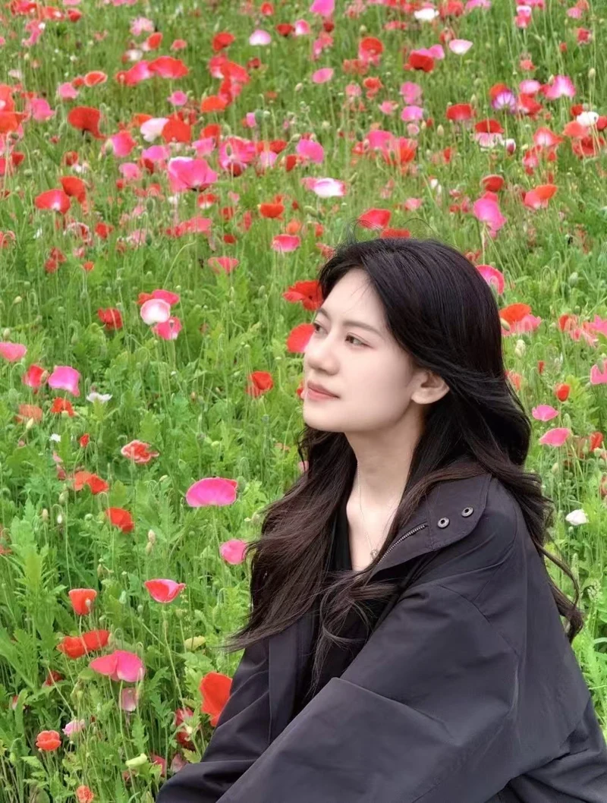

About me
Hello, I’m Ling.
I’m a first-year PhD student in Biology at Temple University and a member of the Yang Lab.
My path to doctoral study began in optometry and continued through ophthalmic clinical data analysis and diagnostic laboratory work. Along the way, I developed an appreciation for careful imaging, quantitative analysis, and reproducible documentation.
I’m now interested in how cells regulate molecular exchange through nuclear pores. My earlier experiences provide a starting point for the questions I hope to explore and the experimental and analytical skills I aim to develop during my PhD.
Download CV (PDF)
My path so far
Education &
experience
Current
PhD student in Biology
Temple University · Yang Lab
Beginning doctoral training with interests in FG-nucleoporins, nuclear pore organization, and nucleocytoplasmic transport.
Apr–Jun 2026
Laboratory Assistant
Chengdu University of Traditional Chinese Medicine
Assisted with cell culture, PCR, plasmid extraction, and sample preparation, alongside routine laboratory organization.
Nov 2024–Mar 2026
Associate Scientist
Kindstar Global Medical Group
Worked on standardized diagnostic laboratory procedures, technical documentation, and communication of immunodiagnostic methods.
Jun 2022–Sep 2024
Ophthalmic Clinical Data Analyst
Sichuan Hesheng Vision Technology Company
Supported clinical research through image-quality review, quantitative analysis of ophthalmic data, and research database management.
Sep 2018–Jun 2022
BSc in Optometry
Chengdu University of Traditional Chinese Medicine
A foundation in biomedical science, ocular biology, and the cellular and molecular basis of visual function.
Outside my academic work, I enjoy photography.
Beyond the Lab